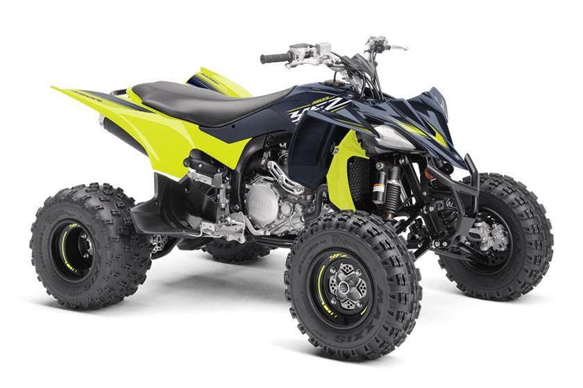
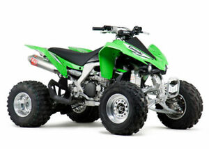

Ever since I was young I have had a passion for all types of vehicles and being outdoors. I enjoy getting into situations that require quick thinking and having to improvise to fix the situation. This led me riding atvs. The places list of places it can take me is endless compared to a car. I have had the oppurtinities to do things because of it that has taught me a lot.
YFZ 450

- My whole life I have been interested in vehicles.
- I first started out with working on cars when I first got my license.
- After cars I got into atv's and started doing trail riding.
- The atv shown above is a Yamaha YFZ 450.
- This specific atv is used for mostly racing, but can be used for trail riding as well.
KFX 450R

- This atv is a kawasaki KFX 450.
- Just like the Yamaha, this atv is used for racing, but is good for trails as well.
- What makes this atv better for trails, is that it has a reverse gear.
Many people believe the kawasaki to be superior to the yamaha, but after many hours spent on both machines, I have been able to conclude that the yamaha is more enojoyable and far superior.